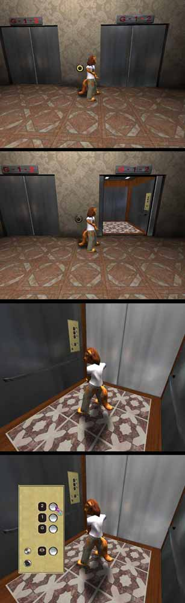

Tamearia Elevator System
This is the code I wrote for Tamearia's elevator system. Due to the complexity of it and the fact that it intertwines with the PlayerController and GameType classes, this can't be used for normal UT2004 maps as is. It would have to be rewritten to, among other things, take replication into account.
This elevator system includes working inner and outer doors, call buttons, and floor indicators inside and outside the elevator. Any number of elevators can be linked to one set of call buttons (one per floor).
This is the main elevator class:
class Elevator extends Mover; var int DestinationFloor; var(Tamearia) edfindable ElevatorDoor InnerDoor; // Set by the mapper. var array<ElevatorIndicator> MyIndicators; // Holds the array of floor indicators. var ElevatorCallButton MyCallButton; // Holds the call button that the player used (so the elevator can 'turn off' the light on the call button). var(Tamearia) int NumberOfFloors; struct OuterDoors { var() edfindable ElevatorDoor OuterDoor; }; var(Tamearia) array<OuterDoors> TheDoors; // Used as a struct so edfindable works. Holds the array of outer doors (in order of floor number). var bool bIsMoving, bOuterDoorReady, bInnerDoorReady, bIsBeingCalled, bIsAtDestination; var Shader Highlight; var ConstantColor Nolight; // Used to change the internal floor indicator. simulated function PostBeginPlay() { local int i, j; super.PostBeginPlay(); if(InnerDoor != none) { InnerDoor.MyElevator = self; if(InnerDoor.CompanionDoor != none) InnerDoor.CompanionDoor.MyElevator = self; } for(i=0;i<TheDoors.length;i++) TheDoors[i].OuterDoor.MyElevator = self; for(j=0;j<MyIndicators.length;j++) MyIndicators[j].SetIndicator(KeyNum*2); SetIndicator(KeyNum*2); } function UsedBy(Pawn User) { if(bIsMoving) return; // An easy way for the menu to return the floor number pressed back to the elevator. TameariaController(Level.GetLocalPlayerController()).CurrentlyUsedElevator = self; if(NumberOfFloors == 3) TameariaController(Level.GetLocalPlayerController()).ClientOpenMenu("TameariaInterface.ElevatorMenuThree",false); // Add more if there are other elevator banks that have more or less floor numbers. } function SetDestinationFloor(int FloorNumber) { DestinationFloor = FloorNumber; if(!bInnerDoorReady || !bOuterDoorReady) // If inner and outer doors aren't ready, close them before moving. MoveDoors(0); else IncrementFloor(); } function CheckDoorsClosed(bool bInnerDoor) { if(bInnerDoor) bInnerDoorReady = true; else bOuterDoorReady = true; if(bInnerDoorReady && bOuterDoorReady) // Once both inner and outer doors are closed, then move. SetDestinationFloor(DestinationFloor); } function IncrementFloor() { local int i; if(PrevKeyNum == DestinationFloor && (!bIsAtDestination || bIsBeingCalled)) // If I'm already at the floor, open the doors. { MoveDoors(1); if(InnerDoor != none) InnerDoor.StopFollowing(); // Release the Inner Door from being attached to the elevator. bIsMoving = false; bIsAtDestination = true; bIsBeingCalled = false; } else if(KeyNum < DestinationFloor) // Move up. { bIsMoving = true; if(InnerDoor != none) InnerDoor.FollowMe(); // Attach inner door to elevator. for(i=0;i<MyIndicators.length;i++) MyIndicators[i].SetIndicator(KeyNum*2+1); // Sets the indicator to the dash between this floor and the next one. SetIndicator(KeyNum*2+1); // Sets internal indicator. SetTimer(MoveTime/2,false); // If the indicator was set when it reached the floor, //it would only be on for a fraction of a second. //This switches it before it reaches the next floor. InterpolateTo(KeyNum+1,MoveTime); bIsAtDestination = false; } else if(KeyNum > DestinationFloor) { bIsMoving = true; if(InnerDoor != none) InnerDoor.FollowMe(); for(i=0;i<MyIndicators.length;i++) MyIndicators[i].SetIndicator(KeyNum*2-1); SetIndicator(KeyNum*2-1); SetTimer(MoveTime/2,false); InterpolateTo(KeyNum-1,MoveTime); bIsAtDestination = false; } } function Timer() { local int i; for(i=0;i<MyIndicators.length;i++) MyIndicators[i].SetIndicator(KeyNum*2); // Sets the floor indicator to the next floor a little bit before it gets there. SetIndicator(KeyNum*2); } function MoveDoors(int KeyFrame) { if(KeyFrame == 1 && MyCallButton != none) MyCallButton.LightOff(); // 'Turns off' the call button that the player used. if(InnerDoor != none) { InnerDoor.MoveDoor(KeyFrame); // Opens or closes the inner door. bInnerDoorReady = false; } if(TheDoors.length != 0) { TheDoors[KeyNum].OuterDoor.MoveDoor(KeyFrame); // Opens or closes the outer doors. bOuterDoorReady = false; } } simulated event KeyFrameReached() { local byte OldKeyNum; OldKeyNum = PrevKeyNum; PrevKeyNum = KeyNum; PhysAlpha = 0; AmbientSound = None; IncrementFloor(); // Check to see if we're at the right floor, if not, keep going. } function SetIndicator(int FloorNumber) { local int i; for(i=0;i<5;i++) Skins[i] = Nolight; Skins[FloorNumber] = Highlight; // Changes the texture on the indicator section to an unlit version. } DefaultProperties { bOuterDoorReady=True bInnerDoorReady=True Highlight=Shader'TameariaTextures.RedUnlit' Nolight=ConstantColor'TameariaTextures.DarkRed' }
The elevator was made in Max so that materials 0-4 were the floor indicator sections, to make the code easier.
Next is the elevator doors. Only one class was needed for the inner and outer doors, a bool can be set by the mapper to indicate which one it is.
class ElevatorDoor extends Mover; var(Tamearia) edfindable ElevatorDoor CompanionDoor; // Optional companion door (for two door elevators). var(Tamearia) bool bInnerDoor; // Set by the mapper to indicate that this is the inner door. var Elevator MyElevator; var vector InitialOffset; // Store the initial distance from the elevator for when we are attached to it. var bool bInitialized, bIsMoving; simulated function PostBeginPlay() { super.PostBeginPlay(); if(bInnerDoor && MyElevator != none) { InitialOffset = Location - MyElevator.Location; if(CompanionDoor != none) CompanionDoor.InitialOffset = CompanionDoor.Location - MyElevator.Location; // This door controls the companion door. } } function FollowMe() // Called from the elevator to attach the door to it while moving. { Enable('Tick'); bIsMoving = true; SetTimer(0.1,false); if(CompanionDoor != none) { CompanionDoor.Enable('Tick'); CompanionDoor.bIsMoving = true; CompanionDoor.SetTimer(0.1,false); } } function StopFollowing() // Called from the elevator to detach the door so it can open. { Disable('Tick'); bIsMoving = false; if(CompanionDoor != none) { CompanionDoor.Disable('Tick'); CompanionDoor.bIsMoving = false; } } function MoveDoor(int MoveToKeyNum) { StopFollowing(); // Make sure we're detached. InterpolateTo(MoveToKeyNum,MoveTime); // Open or close. if(CompanionDoor != none) CompanionDoor.MoveDoor(MoveToKeyNum); } function Tick(float DeltaTime) { if(!bInitialized) { StopFollowing(); bInitialized = true; return; } SetLocation(MyElevator.Location + InitialOffset); // Follow the elevator. BasePos = Location; // Adjust the base position so the doors don't return to the ground floor while opening. } simulated event KeyFrameReached() { super.KeyFrameReached(); if(KeyNum == 0 && bInnerDoor && MyElevator != none) MyElevator.CheckDoorsClosed(True); // Tell the door I'm ready. else if(KeyNum == 0 && MyElevator != none) MyElevator.CheckDoorsClosed(False); else if(KeyNum == 1) SetTimer(StayOpenTime,false); // If I'm opening, set a timer so I close automatically (don't stay open forever). } function Timer() { if(bIsMoving) return; MoveDoor(0); } function bool EncroachingOn(Actor Other) { // Tried to make the doors detect when they hit the player, but one of them always pushes the player. // Can't seem to figure out the best way to do this. This function is still a WIP. if ( Other == None ) return false; if ( Leader == None ) Leader = self; Leader.MakeGroupReturn(); if(CompanionDoor != none) CompanionDoor.EncroachingOn(Other); if ( Other.IsA('Pawn') ) Pawn(Other).PlayMoverHitSound(); return true; } defaultproperties { }
Next up, the call button.
class ElevatorCallButton extends TameariaObject placeable; struct Elevators { var() edfindable Elevator MyElevator; // Bank of elevators set by mapper. }; var(Tamearia) array<Elevators> MyElevators; var(Tamearia) int FloorNumber; // Floor number this call button is at. var Shader Highlight; var ConstantColor Nolight; function UsedBy(Pawn User) { local int i, x; local Elevator ClosestElevator; x = 99; for(i=0;i<MyElevators.length;i++) // Find the closest elevator. { if(MyElevators[i].MyElevator != none && abs(FloorNumber - MyElevators[i].MyElevator.KeyNum) < x) { ClosestElevator = MyElevators[i].MyElevator; x = abs(FloorNumber - MyElevators[i].MyElevator.KeyNum); } } if(x < 99) { ClosestElevator.MyCallButton = self; // Tell the elevator to turn me off when it gets here. Skins[0] = Highlight; ClosestElevator.bIsBeingCalled = true; if(x == 0) ClosestElevator.MoveDoors(1); // If there's an elevator at this floor, open it. else ClosestElevator.SetDestinationFloor(FloorNumber); // Otherwise, move the closest one here. } } function LightOff() { Skins[0] = Nolight; } DefaultProperties { DrawType=DT_StaticMesh StaticMesh=StaticMesh'TameariaMeshes.ElevatorCallButtonMesh' bEdShouldSnap=True bHidden=False Highlight=Shader'TameariaTextures.PaleYellowUnlit' Nolight=ConstantColor'TameariaTextures.PaleYellow' }
Simple script for the floor indicator outside the elevator:
class ElevatorIndicator extends TameariaObject placeable; #exec obj load file=TameariaTextures.utx var(Tamearia) edfindable Elevator MyElevator; var Shader Highlight; var ConstantColor Nolight; simulated function PreBeginPlay() { super.PreBeginPlay(); MyElevator.MyIndicators[MyElevator.MyIndicators.Length] = self; } function SetIndicator(int FloorNumber) { local int i; for(i=0;i<5;i++) Skins[i] = Nolight; Skins[FloorNumber] = Highlight; } DefaultProperties { DrawType=DT_StaticMesh StaticMesh=StaticMesh'TameariaMeshes.ElevatorIndicatorMesh' bEdShouldSnap=True bHidden=False Highlight=Shader'TameariaTextures.RedUnlit' Nolight=ConstantColor'TameariaTextures.DarkRed' }
Now the menu that opens up when the player hits Use inside the elevator:
class ElevatorMenuThree extends TameariaGUIPage; var automated GUIGFxButton b0, b1, b2, b_OpenDoors; var automated BackgroundImage Bkgd; function bool InternalOnClick(GUIComponent Sender) { local TameariaController TC; TC = TameariaController(PlayerOwner()); if(Sender == b0) { TC.CurrentlyUsedElevator.SetDestinationFloor(0); // Move the elevator to floor 0 (ground floor). Controller.CloseMenu(false); } else if(Sender == b1) { TC.CurrentlyUsedElevator.SetDestinationFloor(1); Controller.CloseMenu(false); } else if(Sender == b2) { TC.CurrentlyUsedElevator.SetDestinationFloor(2); Controller.CloseMenu(false); } else if(Sender == b_OpenDoors) { TC.CurrentlyUsedElevator.MoveDoors(1); // Open the elevator doors (open door button standard on elevators). Controller.CloseMenu(false); } return false; } DefaultProperties { // Standard GUI button stuff, not important. }
Now the interconnecting pieces. Part of the code is in the GameInfo:
class TameariaGame extends GameInfo HideDropDown CacheExempt config(Tamearia); ... // Things to keep track of that player can use. var array<ElevatorCallButton> ElevatorCallButtons; function PreBeginPlay() { local ElevatorCallButton ECB; ... // Use button is pretty flaky, so hold an array of all the items I can use so that I can access them easier. foreach DynamicActors(class'ElevatorCallButton',ECB) ElevatorCallButtons[ElevatorCallButtons.Length] = ECB; }
And finally, the PlayerController class:
class TameariaController extends xPlayer config(TameariaUser); ... var TameariaGame TAMGame; var Elevator CurrentlyUsedElevator; var int ObjectUseDistance; exec function Use() { local int i; if (Pawn.Base != None) Pawn.Base.UsedBy(Pawn); // Order these in importance (will want to check for elevator buttons before NPC's etc) for(i=0;i<TAMGame.ElevatorCallButtons.length;i++) { if(VSize(TAMGame.ElevatorCallButtons[i].Location - Pawn.Location) < ObjectUseDistance) { TAMGame.ElevatorCallButtons[i].UsedBy(Pawn); return; } } // If I wanted to check for other usable objects, I would put for() statements here. } defaultproperties { ObjectUseDistance=128 }
